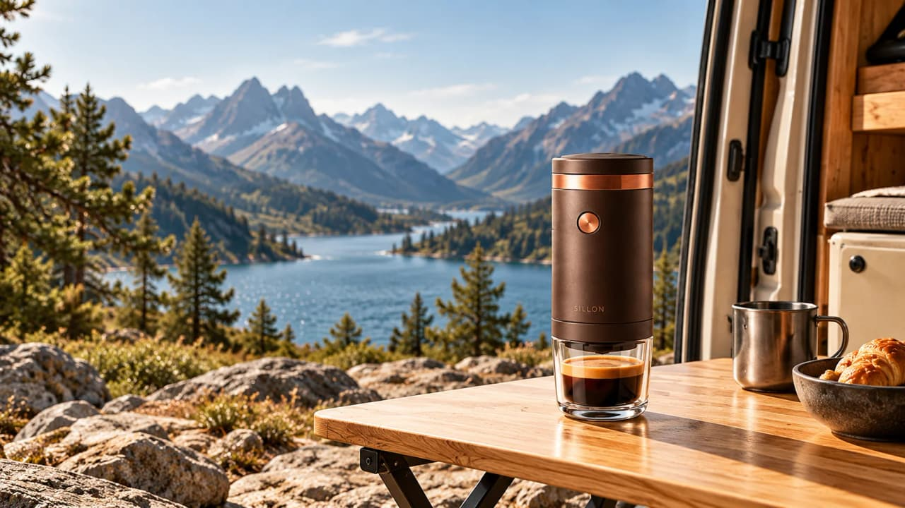
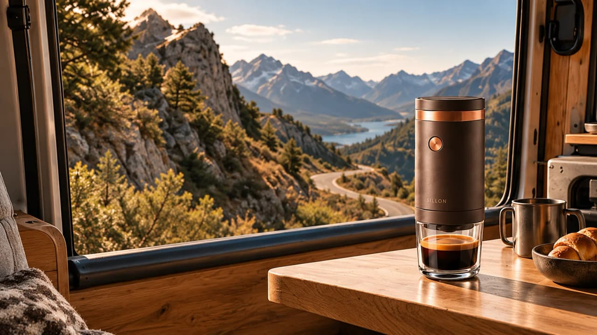

Refaire le plan 3
Devis- 03≈ 3 %Nouveau clip de 5 s · même cadrage, plus lumineuxWan 2.6 · coût probable pour un essai · une reprise n'est débitée que si elle a lieu
Version 2 conservée et restaurable
Je peux refaire seulement le plan 3, sans racheter les autres. Le texte et la musique restent identiques.

